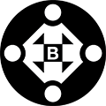
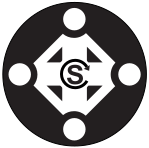

Active projects

-

HTML5 Accessible Video Player Supports captions and screen readers. -

Bootstrap Accessibility Plugin An accessibility plugin for Bootstrap 3. -

Skip To Menu Improved "skip nav" accessibility feature.
Gatt Go package for building Bluetooth Low Energy Peripherals.
-
Genio An easy to use code generation tool that can generate API client libraries in multiple programming languages. .
-
Aurora OpenStack Cloud Management Framework & Portal.
-
Amcharts Accessibility Plugin Accessibility enhancements for the amCharts.com chart library. Enables navigation for keyboard users and provides support for screen reader users.
-
Lusca Application security for express applications.
-
Kappa A hierarchical npm-registry proxy.
-
Adaro A Dust.js view renderer for express.
-
Makara An internationalization (i18n) module for Dust.js.